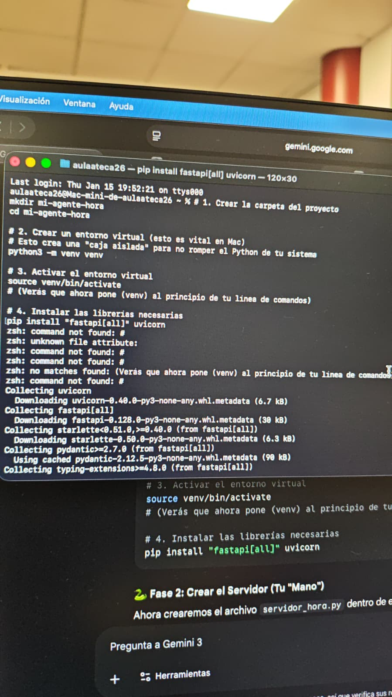

Paso 1: Tu Base de Operaciones
Comenzamos creando la estructura del proyecto y un entorno virtual aislado. Esto es vital para no conflictos de librerías.
Powershell (Windows)
mkdir mi-agente-hora
cd mi-agente-hora
python -m venv venv
.\venv\Scripts\activate
pip install fastapi[all] uvicorn
